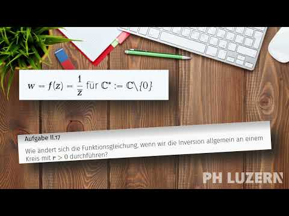

Aufgabe II.17
Wie ändert sich die Funktionsgleichung, wenn wir die Inversion allgemein an einem Kreis mit $r>0$ durchführen?
- Beginnen Sie mit einem Kreis um den Ursprung mit Radius $r$.
- Dann verschieben Sie zum Mittelpunkt $a$.
- Nutzen Sie die Abstandsbeziehung $|w-a| \cdot |z-a| = r^2$.
Herleitung der allgemeinen Formel:
Schritt 1: Kreis mit Radius $r$ um den Ursprung
Für einen Kreis mit Radius $r$ muss gelten: \[|w| \cdot |z| = r^2\]
Dies führt zu: \[w = \frac{r^2}{\overline{z}}\]
Schritt 2: Kreis mit Mittelpunkt $a$ und Radius $r$
Vorgehen durch Koordinatentransformation:
- Verschiebe um $-a$: $z' = z - a$
- Invertiere am Kreis mit Radius $r$ um Ursprung: $w' = \frac{r^2}{\overline{z'}}$
- Verschiebe zurück um $+a$: $w = w' + a$
Zusammengefasst: \begin{align*} w - a &= \frac{r^2}{\overline{z-a}}\\ w &= a + \frac{r^2}{\overline{z-a}} \end{align*}
Kompakte Schreibweise:
\[w = f(z) = a + \frac{r^2}{\overline{z-a}}\]
Oder äquivalent (da $\overline{z-a} = \overline{z} - \overline{a}$): \[w = f(z) = a + \frac{r^2}{\overline{z} - \overline{a}}\]
Verifikation der Eigenschaften:
- Fixpunkte: Für $|z-a| = r$ gilt $|w-a| = r$ ✓
- Involutorität: $f(f(z)) = z$ ✓
- Für $r = 1$ und $a = 0$ erhalten wir die bekannte Formel $w = \frac{1}{\overline{z}}$ ✓
Geometrische Interpretation:
Die Inversion an einem beliebigen Kreis lässt sich als Verkettung verstehen:
- Translation (Mittelpunkt → Ursprung)
- Inversion am Kreis mit Radius $r$
- Rücktranslation

Im Video: Etappe 7 · Kreisspiegelung bei 6:48